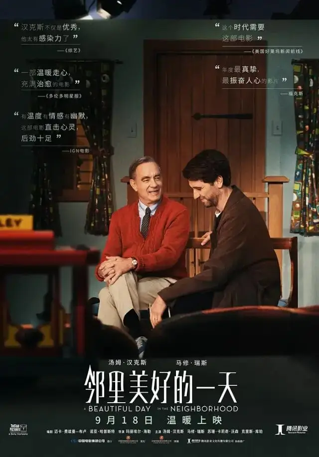
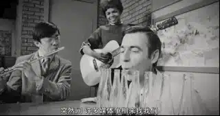
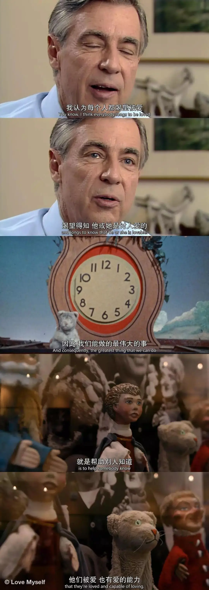
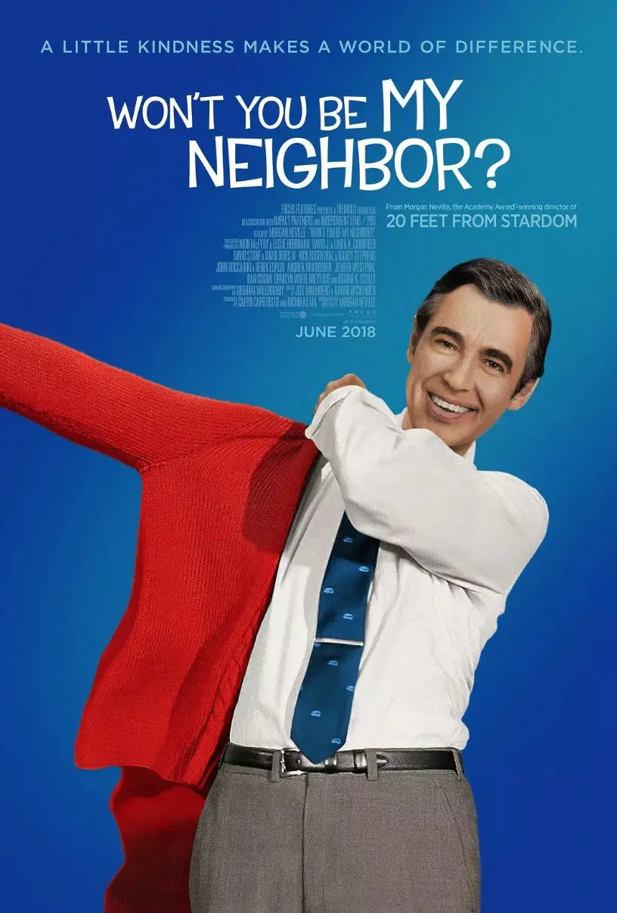
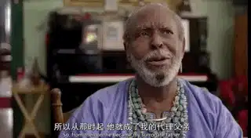
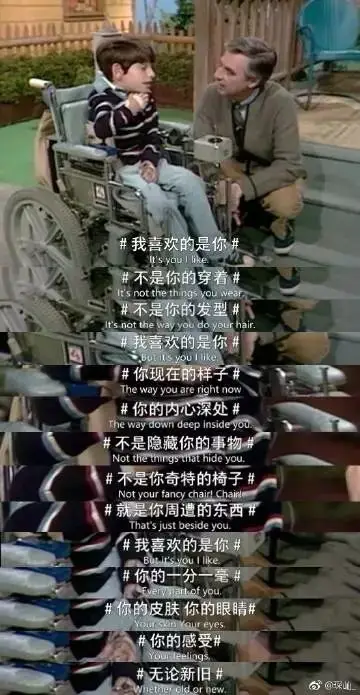
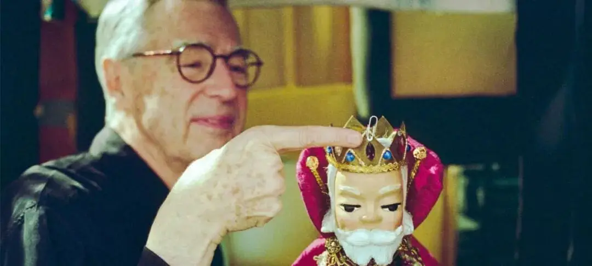
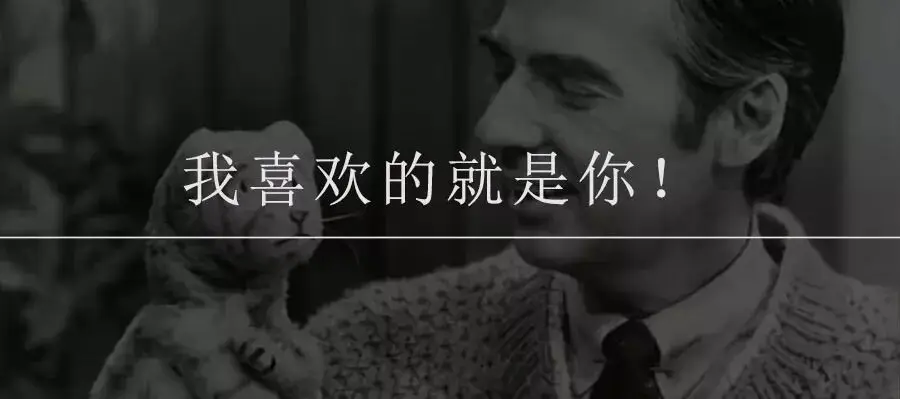
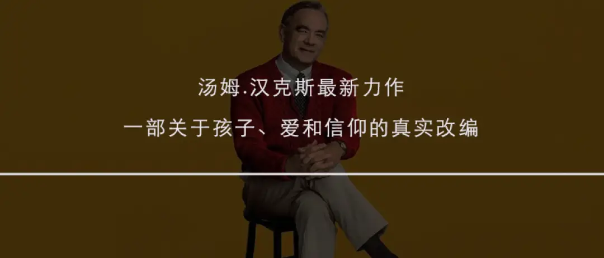

今天，这部真实故事改编的传记电影，终究还是正式上映了。
故事主角弗雷德.罗杰斯是美国最知名的儿童节目主持人。

他的《罗杰斯先生的左邻右舍》从1968年开播到2001年结束，在三十多年的时间里陪伴了一代又一代的美国人。

2003年弗雷德.罗杰斯去世至今，他的影响力非但没有减少，反而与日俱增，人们总是以各种方式表达对罗杰斯的思念和感谢。

一颗小行星以他的名字命名。
美国参议院一致通过决议，以纪念罗杰斯的巨大贡献：
“通过他的灵性和平静的特质，罗杰斯先生能够接触到我们国家的孩子，并鼓励他们每个人了解他们在社区和家庭中发挥的重要作用。
更重要的是他并没有回避处理死亡和离婚等难题，而是鼓励孩子以健康、建设性的方式表达自己的情感，往往为生活的艰辛提供一个简单的答案” 。
2018年，奥斯卡得主摩根·内维尔拍摄的罗杰斯传记纪录片《与我为邻》在美国上映。

电影票房最终收入2200万美元，成为有史以来收入最高的传记纪录片。
在大屏幕看着独一无二的罗杰斯，无数老爷爷和老奶奶在电影院泪目。
几乎与此同时，女导演玛丽埃尔·海勒开始制作罗杰斯的传记电影。
她表示“作为一个母亲，我深受弗雷德·罗杰斯的教育启发，作为一个人，我对他毕生的工作充满敬畏”
海勒采访时说到，“我迫不及待地想把他的故事带给公众，并成为这样一个深思熟虑、智慧的群体中的一个，这些人都聚集在一起制作这部电影，这让我觉得这是对我们支离破碎的文化的一剂良药。”
2019年，这部由汤姆.汉克斯主演的《邻里美好的一天》在美国上映，《时代周刊》将其评为“2019年十佳影片”。

今天，这部电影在中国大陆广泛上映，罗杰斯将被中国父母所了解。
罗杰斯何以有如此巨大的影响力，能成为许多美国人的精神父亲？


这个故事要从罗杰斯的童年讲起。
他小的时候，身体较为肥胖，经常被同学嘲笑。
因此，罗杰斯很长时间活在一种自卑和孤独中，他也变得极容易发脾气。
可是，他的家人希望他做一个懂事的孩子，不允许他随便发脾气。
所以，当他情绪上来时，他总是可以通过钢琴来宣泄，可以通过指尖来表达他的愤怒、哭泣以及快乐。
因为经常一个人，小罗杰斯学会了和自己玩，他可以模仿很多不同的声音来为自己编造快乐。
直到有一天，祖父告诉小罗杰斯：我就喜欢你现在这个样子。

不是因为你优秀才喜欢你。
不是因为你身材好才喜欢你。
祖父喜欢的就是罗杰斯原本的样子。
在祖父面前不需要隐藏，罗杰斯感受到了无条件的爱和接纳。
因此，在罗杰斯的童年里，他明白作为一个小孩子的脆弱和敏感。
同时，他也亲身经历了音乐艺术、爱和救赎的力量。
这些经历都缔造了日后的罗杰斯。

罗杰斯长大后，成绩非常优异，获得了大学音乐学位。
毕业后，开始在电视台的一档儿童节目做主持人。
在这期间，他看到了美国许多不健康的儿童节目对孩子的伤害和误导。
再加上自己童年的经历，他对儿童教育有着极强的负担。
因此，在工作期间，他中午休息时间开始到匹兹堡神学院专研神学和儿童心理。
后来，罗杰斯还短暂地成为了一名长老会牧师。
但不久，罗杰斯还是回到了儿童节目，并在1968年，创办了对美国影响巨大的《罗杰斯先生的左邻右舍》。

节目名字的灵感来自圣经中的一处经文：你要尽心、尽性、尽力、尽意爱主你的神；又要爱邻舍如同自己。
布景简陋、没有明星、节奏缓慢，没有小丑和浮夸的动作......
从表面来看，这档节目毫无新意。

可我给大家举个例子，大家便可以知道罗杰斯的节目为什么能够有如此巨大的影响力。
有一天，罗杰斯收到一封名叫凯蒂的盲女的信。
信中写道：“请说出你在喂鱼，因为我担心他们，但我看不到你是否在喂它们，所以请你大声地说出你在喂它们。“
原来，罗杰斯曾在节目中喂小鱼，但这个举动并没有持续，所以凯蒂非常担心小鱼的处境。
凯蒂的爸爸告诉罗杰斯，如果罗杰斯没有提到他喂鱼，凯蒂会哭，这会使眼睛更加恶化，为此罗杰斯先生每一次都会告诉观众他正在喂养鱼。
为此，罗杰斯以后在节目后面的情节中，他总是会大声告诉观众他正在喂鱼。

这就是罗杰斯。
他曾说：
你可以给任何人的最伟大的礼物之一就是诚实的自己，我也相信孩子们可以在一英里远的地方发现任何一个假。
因此，罗杰斯真诚地对待每一个孩子，努力聆听每一个孩子的声音，竭力去理解这些孩子的感受和需要。
当他录制节目时，罗杰斯看到摄影机时，他就想到那是一个人，那个人和他之间的区域是很神圣的地方，那里将会发生很多事。
为此，罗杰斯像看护小天使一样为他们准备节目，创作歌曲。
小时候的亲身经历以及他的信仰让他明白，并非所有人都能够成长，除非他真正接受了他自己。
所以在节目开播的三十多年里，罗杰斯一遍又一遍地告诉每一个电视机前的孩子，这世界上没有一个人和你一样，我喜欢现在的你。
罗杰斯从未因为孩子小而忽视孩子的感受，他从没有忘记作为孩子的脆弱，他明白现实世界的惨剧会在孩子心灵中留下怎样的阴影。
肯尼迪被暗杀、挑战者号航天飞机爆炸、父母吵架离婚......有太多的小孩因此而被死亡和毁灭的幻想摆布。
因此，罗杰斯的节目从不会避忌谈论死亡、暗杀、战争、种族歧视、离婚这些沉重的话题。
他总会通过小孩子可以理解的方式，向处在阴影中的孩子表达关怀和爱，同时作出引导。
比如他会通过吹起气球然后再放掉气来向小朋友解释什么是死亡。


正是这种爱与真诚才会让罗杰斯如此深入许多人的心灵深处。


今天，关于罗杰斯的传记电影正式上映，鼓励大家一起透过这部电影认识他。
坦率说，比起摩根·内维尔的《与我为邻》，这部电影并不算高明和成功。
但也依旧值得我们走入电影院。
因为，中国太需要这样的人。
我们太需要透过这样的精神力量来审视我们的学区房和鸡血教育了。

-END-
相关推荐
▼
（点击图片即可获取全文）


这里没有挑逗你眼目情欲的小鲜肉
也没有挑动你肉体情欲的段子
更没有膨胀你今生骄傲的鸡血
我们只在乎那些最质朴真诚的作品
在那里我们才能恢复真正的想象力
我们也坚信这才是我们真正需要的

ID:Six_hundred_hits
长按二维码，一键关注
【六百击】
电影评论
尽情分享朋友圈

微信二维码打赏通道